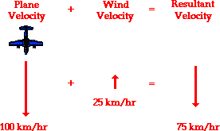
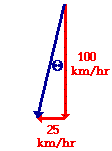

Panel
Vectors - Motion and Forces in Two Dimensions >> Lesson 1 - Vectors: Fundamentals and Operations
1.7 Relative Velocity
On occasion objects move within a medium that is moving with respect to an observer. For example, an airplane usually encounters a wind - air that is moving with respect to an observer on the ground below. As another example, a motorboat in a river is moving amidst a river current - water that is moving with respect to an observer on dry land. In such instances as this, the magnitude of the velocity of the moving object (whether it be a plane or a motorboat) with respect to the observer on land will not be the same as the speedometer reading of the vehicle. That is to say, the speedometer on the motorboat might read 20 mi/hr; yet the motorboat might be moving relative to the observer on shore at a speed of 25 mi/hr. Motion is relative to the observer. The observer on land, often named (or misnamed) the "stationary observer" would measure the speed to be different than that of the person on the boat. The observed speed of the boat must always be described relative to who the observer is.
To illustrate this principle, consider a plane flying amidst a tailwind. A tailwind is merely a wind that approaches the plane from behind, thus increasing its resulting velocity. If the plane is traveling at a velocity of 100 km/hr with respect to the air, and if the wind velocity is 25 km/hr, then what is the velocity of the plane relative to an observer on the ground below? The resultant velocity of the plane (that is, the result of the wind velocity contributing to the velocity due to the plane's motor) is the vector sum of the velocity of the plane and the velocity of the wind. This resultant velocity is quite easily determined if the wind approaches the plane directly from behind. As shown in the diagram below, the plane travels with a resulting velocity of 125 km/hr relative to the ground.

If the plane encounters a headwind, the resulting velocity will be less than 100 km/hr. Since a headwind is a wind that approaches the plane from the front, such a wind would decrease the plane's resulting velocity. Suppose a plane traveling with a velocity of 100 km/hr with respect to the air meets a headwind with a velocity of 25 km/hr. In this case, the resultant velocity would be 75 km/hr; this is the velocity of the plane relative to an observer on the ground. This is depicted in the diagram below.
Now consider a plane traveling with a velocity of 100 km/hr, South that encounters a side wind of 25 km/hr, West. Now what would the resulting velocity of the plane be? This question can be answered in the same manner as the previous questions. The resulting velocity of the plane is the vector sum of the two individual velocities. To determine the resultant velocity, the plane velocity (relative to the air) must be added to the wind velocity. This is the same procedure that was used above for the headwind and the tailwind situations; only now, the resultant is not as easily computed. Since the two vectors to be added - the southward plane velocity and the westward wind velocity - are at right angles to each other, the Pythagorean theorem can be used. This is illustrated in the diagram below.

In this situation of a side wind, the southward vector can be added to the westward vector using the usual methods of vector addition. The magnitude of the resultant velocity is determined using Pythagorean theorem. The algebraic steps are as follows:
(100 km/hr)2 + (25 km/hr)2 = R2
10 000 km2/hr2 + 625 km2/hr2 = R2
10 625 km2/hr2 = R2
SQRT(10 625 km2/hr2) = R
103.1 km/hr = R
The direction of the resulting velocity can be determined using a trigonometric function. Since the plane velocity and the wind velocity form a right triangle when added together in head-to-tail fashion, the angle between the resultant vector and the southward vector can be determined using the sine, cosine, or tangent functions. The tangent function can be used; this is shown below:
tan (theta) = (opposite/adjacent)
tan (theta) = (25/100)
theta = invtan (25/100)
theta = 14.0 degrees
If the resultant velocity of the plane makes a 14.0 degree angle with the southward direction (theta in the above diagram), then the direction of the resultant is 256 degrees. Like any vector, the resultant's direction is measured as a counterclockwise angle of rotation from due East.
Next Section: Vector Components
Jump To Next Lesson: What is a Projectile?